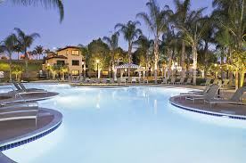
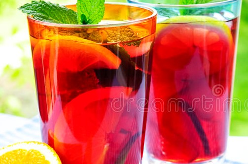

Please
To Send(a Special)Message
We welcome you to visit Beach City Smoothies and experience us for yourself.
Carlsbad Village Association
300 Carlsbad Village Drive, 108A #135
Carlsbad, CA 92008
(760) 453-7076
When you choose Beach City, you are choosing our finest organic beans and canned vegetables, grown and harvested in the US at the peak of ripeness and then prepared within hours, and just miles from where they were picked to lock in fresh taste.
Attributions

Beauty and Wonder; Above and Below
High ancient sea ledges, deep rocky canyons, flowering cactus, and desert wildlife—treasures above the ground in the Chihuahuan Desert. Hidden beneath the surface are more than 119 caves—formed when sulfuric acid dissolved limestone leaving behind caverns of all sizes.
Carlsbad Caverns National Park is in the Chihuahuan Desert of southern New Mexico. It features more than 100 caves. The Natural Entrance is a path into the namesake Carlsbad Cavern. Stalactites cling to the roof of the Big Room, a huge underground chamber in the cavern. Walnut Canyon Desert Loop is a drive with desert views. Rattlesnake Springs, a desert wetland, attracts reptiles and hundreds of bird species.